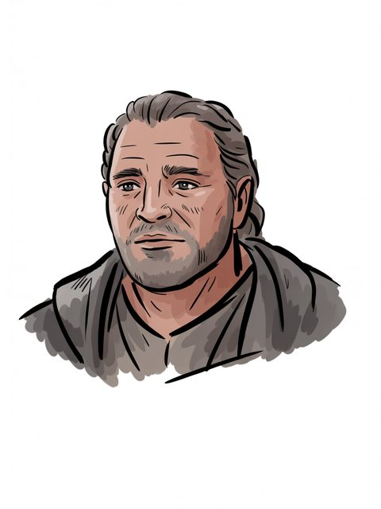

The Arda Archive · Volume III · Records of Persons
The Arda Archive · Hyarmendacil Imccxvii
Hyarmendacil I
House of Elendil (Anárioni)

House of Elendil (Anárioni)
Of the house
House of Elendil (Anárioni) of Gondora
The dates as the archive holds them
–T.A. 1149b
Style and office
Ciryaher; Gondor's height of powerc
The name in the scriptsd
— Tengwar, Quenya, classical — Cirth, Angerthas Moria, APPLIED by this archive
The archive sets this name in the tengwar, Quenya, classical mode and in the cirth, Angerthas Moria mode APPLIED to it. TOLKIEN DID NOT WRITE IT SO: the letter values are Appendix E's, read from the tables named below; the setting of this name in them is the archive's own work and is offered as nothing else. The sarati are REFUSED, and the refusal is the archive's published answer: it holds the shapes -- 48 of 48 of the ConScript block, Björkman's outline face, and 66 value-labelled plates -- and nothing whatever that binds a shape to a sound. Every value table in every source it can reach is an image carrying no text.
What the corpus says
“changed them to Ostoher, Ondoher (and also the original name of Hyarmendacil I, Ciryahir”f
“Hyarmendacil I (Ciryaher) 1149. Gondor now reached the height of its”g
“Hyarmendacil I, Gondor was at the peak of her might. The succession of the”h
“in the days of King Hyarmendacil I (Third Age 1015 – 1149) is said to have extended”i
“power in the days of King Hyarmendacil I (Third Age 1015-1149), extended”j
a The text — LotR App A I [C]
b The text — [I-H]
c The archive's reading — [I-H]
d The transcription is the ARCHIVE'S OWN WORK and is not attested: the letter values are read from site/arda_scripts.json and site/arda_tengwar_mode_gu.json for the tengwar, site/arda_cirth.json and site/arda_cirth_codepoints.json for the cirth, and the mode is named beside each line. [I-M]
e The ruling — the owner's ruling of 13 August 2026, on the 552 generated images: 'we are free to use them'. That settles the LICENCE and does not settle the HAND, which is recorded above as what it is. [C]
f The text — The Peoples of Middle Earth · l.6892[C]
g The text — The Lord of the Rings · l.46424[C]
h The text — The Complete Tolkien Companion · l.1785[EXT]
i The text — Unfinished Tales of Numenor and Middle Earth · l.8271[C]
j The text — The Lord of the Rings a Reader's Companion · l.17397[EXT]
EW·i“Anduin.
A triskele boss — the archive's own hand
Volume III · Records of Personsmccxviii
“Anduin. King Hyarmendacil I (1015-1149 T.A.) defeated Islamic Turks which faced off against the eastern half of”k
The name stands in 15 cited lines, in 8 of the corpus's 192 texts — most often in The Complete Tolkien Companion (4), The Peoples of Middle Earth (2), Unfinished Tales of Numenor and Middle Earth (2).l
Arms of the Kings of Gondor — its realm, as a device and not a likeness
The drafts against the published text
2 cited lines stand in 1 volume of the drafts and 3 in 2 of the published books — the published text carries it more often than the drafts did.m
Named in the same lines as these places
Gondor (4).n
Named in the same lines as these realms
Gondor (4).o
As the archive holds the line
of House of Elendil (Anárioni); in Gondor; child of Ciryandil; father or mother of Atanatar II Alcarin; –T.A. 1149.p
Named in the same lines
Ciryandil (1), Eärnil I (1), Tarannon Falastur (1), Ondoher (1) — a shared line is a fact about the line, not a claim that the two met.q
counted from corpus lines that name BOTH records. A shared line is a fact about the line, not a claim that the two met; `eg` names a line a reader can open. [C]
By its style
Hyarmendacil I is styled King of Gondor — “Hyarmendacil I ‘South-victor’, fifteenth King of Gondor.”r
By another name in the texts
Hyarmendacil I is named Ciryaher — “Hyarmendacil I (Ciryaher) 1149. Gondor now reached the height of its”s
What its name is said to mean
Hyarmendacil I — “Hyarmendacil I ‘South-victor’, fifteenth King of Gondor.”t
What was looked for and not found
a marginal hand recording a change to this record — searched over 59 verified notes in site/arda_hands.json, and nothing was found.u
What was looked for and not found
recorded by-names for this figure — searched over 47 worked sets in site/arda_epithets.json, and nothing was found.v
k The text — Mallorn 59 · l.2417[EXT]
l Counted — site/arda_apparatus.json[C]
m Counted — site/arda_apparatus.json[C]
n Counted — site/arda_apparatus.json[C]
o Counted — site/arda_apparatus.json[C]
p The table — LotR App A I[C]
q Counted — site/arda_apparatus.json[C]
r The line, found through Tolkien Gateway — Unfinished Tales of Numenor and Middle Earth · l.14034[C]
s The line, found through Tolkien Gateway — The Lord of the Rings · l.46424[C]
t The line, found through Tolkien Gateway — Unfinished Tales of Numenor and Middle Earth · l.14034[C]
Part of the Arda Archive — a corpus-first index of Tolkien's legendarium; claims are cited or marked how far they are inferred, silences are declared, and the colophon prints how many claims carry neither.